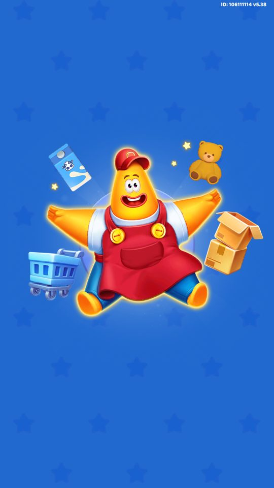
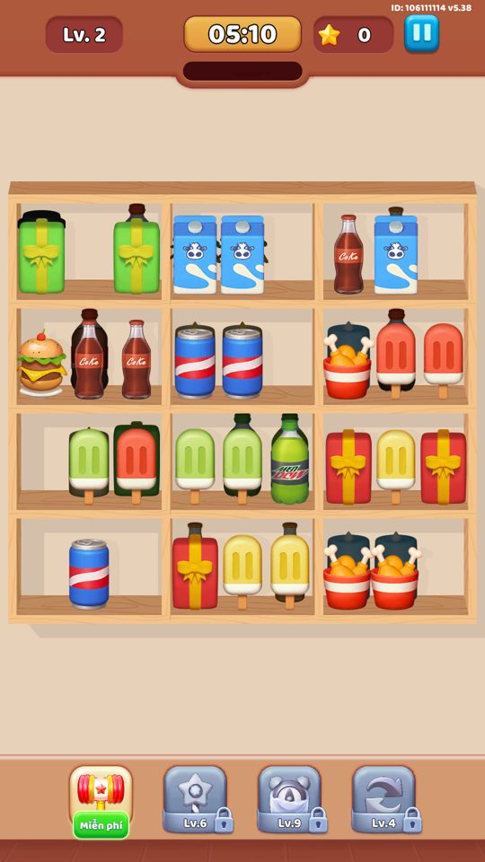
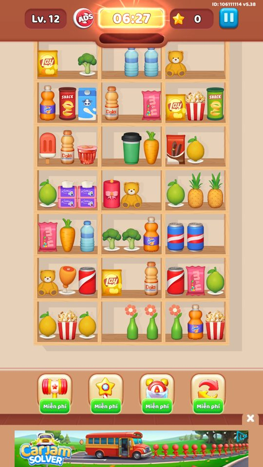
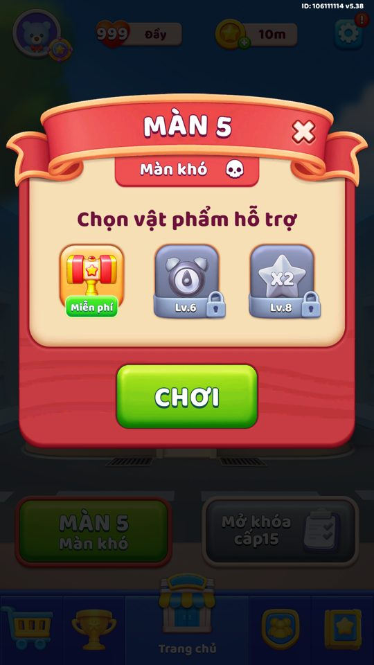

Ảnh chụp màn hình
Ghép 3 món giống nhau trên kệ để dọn sạch bàn trước khi hết giờ.
Mô tả
- Bàn chơi là một lưới các kệ hàng (Cell), mỗi kệ xếp chồng nhiều lớp (layer) hàng hoá 3D.
- Người chơi chạm chọn một món để chuyển sang kệ đang chứa cùng loại; khi hàng trên cùng của một kệ đủ 3 món giống nhau thì chúng được ghép (match-3) và biến mất, để lộ lớp bên dưới.
- Dọn sạch toàn bộ hàng trước khi hết giờ thì thắng. Hết giờ hiện 'Time's Up!', còn khi không còn nước đi mà vẫn còn hàng thì 'Out of space!' (kẹt).
- Số sao thưởng cuối màn tính theo thời gian còn lại, gấp đôi khi đang có hiệu ứng x2 Star.
Còn thiếu / chưa xác minh
Mở khóa & điểm vào
Có ngay từ màn 1 (FTUE). Đây là cơ chế nền tảng, không cần mở khoá; các vật cản và biến thể độ khó được thêm dần theo màn. Bằng chứng: GenLevelController.InitLevelByCurrentLevel, LevelDataContainer.IsLevelFTUE.
Điểm vào:
- Nút Play ở màn Home vào thẳng màn hiện tại
- Cảnh gameplay sinh bởi GenLevelController.Awake (InitLevelByCurrentLevel / InitLevelEditor / InitLevelSuperLeague)
Cách hoạt động
- GenLevelController dựng bàn từ LevelInfo: mỗi Cell theo CellInfo (vị trí, cellType, số lớp, moveType, speed, isLock) và nhồi hàng vào ItemContainer.
- LevelController.InitData khởi tạo các controller con (ô khoá, kệ di chuyển, kệ rơi, gợi ý) và đặt thời gian chơi; DoneGenLevel chuyển sang LevelState.Playing.
- Mỗi giây (time_check_win_interval = 1), CheckState kiểm tra thắng (IsCompleteLevel), kẹt (CheckStuck) và hết giờ (CheckTimeOut).
- Khi hàng top của một kệ đủ và cùng loại (IsFullAndSameItemInRowTop) thì RemoveItemInTopLayer dọn hàng, phát OnActiveMatch3, rồi DelayActiveNextRow mở lớp kế tiếp.
- Thắng: EndGame(Win), tính sao bằng GetStarBonusByTime = floor(thời gian còn lại / 10). Thua: EndGame(TimeOut) hoặc EndGame(Stuck).
- Trạng thái dở có thể lưu (GetLevelProgressDataToSave -> LevelSavedDataController, key level_saved_1) và khôi phục khi mở lại app.
Luồng chi tiết theo code
GenLevelController.Awake chọn nguồn màn (màn thường theo LevelDataController.Level, màn Super League, hoặc level editor) rồi nạp LevelInfo (SOLevel baked qua Addressables hoặc txt từ server). SetupCells dựng từng Cell theo CellInfo (posX/posY, cellType, numberLayer, moveType, speed, isLock) và nhồi hàng vào ItemContainer; ShuffleCellPos/ShuffleItemInCell/ShuffleItemVisual xáo trộn lại khi chơi lại (theo NumPlay) để màn bớt lặp. LevelController.InitData(cells, time, numLock, cellLocks) khởi tạo các controller con (CellLockController, CellMoveController, CellDropController, HintLevelController) và đặt _timeToPlayInit = LevelInfo.timeToPlay. DoneGenLevel đặt LevelState = Playing. Mỗi frame Update gọi CheckState: đếm ngược thời gian (_timeToPlayRemain), kiểm tra thắng (CheckWin → IsCompleteLevel), kẹt (CheckStuck) và hết giờ (CheckTimeOut). Khi người chơi chạm chọn một kệ, hàng trên cùng được nhấc sang kệ đích hợp lệ; khi hàng top của một kệ đủ 3 món giống nhau (IsFullAndSameItemInRowTop) thì match-3: RemoveItemInTopLayer dọn hàng, phát OnActiveMatch3, rồi DelayActiveNextRow mở lớp kế tiếp. Thắng: EndGame(Win), tính sao qua GetStarBonusByTime. Thua: EndGame(TimeOut) hoặc EndGame(Stuck). Trạng thái màn có thể lưu lại giữa chừng (GetLevelProgressDataToSave → LevelSavedDataController) để khôi phục khi thoát app.
Ảnh chụp màn hình (6)
6 ảnh chụp trong game (BlueStacks/LDPlayer, tài khoản cấp 4). Bấm ảnh để phóng to; nhãn UC dẫn tới use case tương ứng.









Phần thưởng
Phần thưởng theo code
| Ngữ cảnh | Phần thưởng | Evidence |
|---|---|---|
| Thắng màn | Sao = floor(thời gian còn lại / 10) gấp đôi khi x2 Star đang bật | LevelController.GetStarBonusByTime |
Số liệu chính
(không có)
Ghi chú thiết kế
- Để dành kệ trống làm chỗ 'tạm' tránh kẹt (Out of space).
- Hết giờ còn có thể xem quảng cáo cộng 30 giây (tối đa 1 lần/màn).
Use case (8)
Bấm vào từng use case để mở. Mở/đóng tất cả
UC-01 Ghép 3 món giống nhau để dọn hàng
Các bước- Người chơi chạm chọn kệ nguồn, hàng được chuyển sang kệ đích cùng loại
- ItemContainer.IsFullAndSameItemInRowTop() trả true khi hàng top đủ và cùng loại
- RemoveItemInTopLayer dọn hàng ở lớp trên cùng
- LevelController.OnActiveMatch3 phát sự kiện ghép (log match3_{0})
| Actor | Player |
|---|---|
| Trigger | Hàng trên cùng của một kệ đủ 3 món cùng loại |
| Điều kiện | LevelState = Playing, kệ không bị khoá (IsLock = false) |
| Kết quả | 3 món biến mất, cộng combo, có thể lộ lớp hàng bên dưới |
| Quy tắc / số liệu | Chỉ ghép khi đủ 3 (hoặc đủ số ô hàng top) cùng loại; combo hiển thị Combo x{0} |
| Evidence | ItemContainer.IsFullAndSameItemInRowTop; ItemContainer.RemoveItemInTopLayer; LevelController.OnActiveMatch3 |
UC-02 Mở lớp hàng kế tiếp sau khi dọn hàng top
Các bước- ItemContainer.CheckLayerBlank/RemoveTopRow xác định lớp đã trống
- DelayActiveNextRow(currentLayer, delayTime, checkState) kích hoạt lớp kế
- ActiveItemInLayer bật hàng của lớp mới cho chọn
| Actor | System |
|---|---|
| Trigger | Một lớp của kệ bị dọn sạch |
| Điều kiện | Kệ còn nhiều hơn một lớp (HasMoreThanOneLayer) |
| Kết quả | Lớp hàng ẩn bên dưới hiện ra để chơi tiếp |
| Quy tắc / số liệu | Mỗi Cell có numberLayer lớp; lớp dưới chỉ xuất hiện khi lớp trên được dọn |
| Evidence | ItemContainer.DelayActiveNextRow; ItemContainer.IsActiveNextRow; CellInfo.numberLayer |
UC-03 Thắng màn khi dọn sạch toàn bộ hàng
Các bước- CheckState mỗi giây (time_check_win_interval = 1) gọi CheckWin
- IsCompleteLevel kiểm tra đã hết nước (CanCreateMatch3WithVisibleItems, CanGetItemFromCellSingle, CanGetItemFromCellLayerCount, CanOpenNewRowByMove đều không còn hàng)
- EndGame(EndGameState.Win) chạy, AnimEndgame phát hiệu ứng
- GetStarBonusByTime tính sao theo thời gian còn lại
| Actor | System |
|---|---|
| Trigger | Không còn hàng cần ghép trên bàn |
| Điều kiện | LevelState = Playing |
| Kết quả | Màn thắng, chuyển sang luồng kết thúc (EndLevelController) và tăng level |
| Quy tắc / số liệu | EndGameState.Win = 1; LevelResult.Win = 4 |
| Evidence | LevelController.CheckWin; LevelController.IsCompleteLevel; LevelController.EndGame; enum EndGameState |
UC-04 Thua vì hết giờ
Các bước- Update giảm _timeToPlayRemain, cảnh báo khi còn ít thời gian (_isWarningTime)
- CheckTimeOut phát hiện hết giờ
- EndGame(EndGameState.TimeOut), hiển thị popup 'Time's Up!'
- Có thể mời xem quảng cáo cộng thêm giờ (CanWatchAdToGetMoreTimeEndGame)
| Actor | System |
|---|---|
| Trigger | Đồng hồ màn về 0 |
| Điều kiện | Vẫn còn hàng chưa dọn |
| Kết quả | Màn thua kiểu Timeout, mất 1 mạng (trừ khi revive) |
| Quy tắc / số liệu | EndGameState.TimeOut = 3; LevelResult.Timeout = 2; cộng giờ mỗi lần timeAdditionEndgame = 30s, numAdsTimeoutPerLevel = 1 |
| Evidence | LevelController.CheckTimeOut; LevelController.EndGame; LevelController.CanWatchAdToGetMoreTimeEndGame; RemoteConfig.timeAdditionEndgame |
UC-05 Thua vì kẹt / hết chỗ
Các bước- CheckStuck kiểm tra không còn CanCreateMatch3WithVisibleItems / CanOpenNewRowByMove
- Phân loại kẹt: 'stuck' hoặc 'soft_stuck' (GetQuitDetail, IsStuckInLayer0)
- DelayCallEndGameStuck rồi EndGame(EndGameState.Stuck), popup 'Out of space!'
- Có thể mời xem quảng cáo nhận powerup khi kẹt (CanWatchAdToGetPowerupWhenStuck)
| Actor | System |
|---|---|
| Trigger | Không còn nước ghép hợp lệ nhưng vẫn còn hàng |
| Điều kiện | Các kệ top không thể tạo match-3 và không mở được lớp mới |
| Kết quả | Màn thua kiểu Stuck; gợi ý dùng vật phẩm (toast 'You're stuck!') |
| Quy tắc / số liệu | EndGameState.Stuck = 2; LevelResult.Stuck = 1; numAdsPowerupStuck = 1 |
| Evidence | LevelController.CheckStuck; LevelController.GetQuitDetail; LevelController.CanWatchAdToGetPowerupWhenStuck; RemoteConfig.numAdsPowerupStuck |
UC-06 Tính sao thưởng theo thời gian còn lại
Các bước- GetStarBonusByTime lấy _timeToPlayRemain
- starBonus = floor(timeRemain / 10)
- Nhân đôi nếu đang có hiệu ứng x2 (ResourceController.IsX2Reward): kết quả << 1
| Actor | System |
|---|---|
| Trigger | Thắng màn |
| Điều kiện | EndGameState = Win |
| Kết quả | Số sao thưởng tỉ lệ với thời gian dư, gấp đôi khi x2 Star đang bật |
| Quy tắc / số liệu | starBonus = (int)(timeToPlayRemain / 10), doubled khi IsX2Reward |
| Evidence | LevelController.GetStarBonusByTime; ResourceController.IsX2Reward |
UC-07 Lưu và khôi phục tiến trình giữa màn
Các bước- GetLevelProgressDataToSave gom trạng thái: hàng trong từng kệ (Cell_Item), ô khoá, lớp ẩn, ô đóng cuối, vật phẩm khoá
- LevelSavedDataController.GetAndSaveData ghi vào save (key level_saved_1, mã hoá SaveLoadHandler)
- Lần sau GenLevelController.CheckLevelSavedData đọc lại và dựng đúng trạng thái dở
| Actor | System |
|---|---|
| Trigger | Thoát app / tạm dừng giữa màn (OnApplicationPause/Quit) |
| Điều kiện | Đang chơi dở một màn |
| Kết quả | Người chơi quay lại đúng bàn đang chơi dở thay vì phải chơi lại từ đầu |
| Quy tắc / số liệu | Chỉ lưu khi màn chưa kết thúc; xoá save khi màn xong (LevelSavedDataController.ClearData) |
| Evidence | LevelController.GetLevelProgressDataToSave; LevelSavedDataController.GetAndSaveData; GenLevelController.CheckLevelSavedData |
UC-08 Kệ di chuyển (băng chuyền)
Các bước- Cell.InitData nhận moveType và speed
- CellMoveController.InitData điều khiển kệ trượt theo hướng (Right/Left/Top/Bot/Drop)
- CellDropController xử lý kệ loại rơi (Drop)
| Actor | System |
|---|---|
| Trigger | Màn có Cell với MoveType khác Idle |
| Điều kiện | CellInfo.moveType != 0 (Idle) |
| Kết quả | Vị trí kệ thay đổi liên tục, tăng độ khó khi canh ghép |
| Quy tắc / số liệu | MoveType: Idle=0, Drop=1, Right=2, Left=3, Top=4, Bot=5; tốc độ = CellInfo.speed |
| Evidence | Cell.InitData; CellMoveController.InitData; CellDropController.InitData; enum MoveType |
Cấu hình (13)
Gộp mọi nguồn: const trong code, JSON mặc định trong Resources, bảng static, storage key, AB test, cờ server.
| Nguồn | Key | Kiểu | Giá trị | Ý nghĩa | Nơi định nghĩa |
|---|---|---|---|---|---|
| code const | CellType | enum | CellNormal=0, CellSingle=1, CellLayerCount=2, CellMove=3 | Kiểu kệ: thường, đơn ô, đếm theo lớp, và kệ di chuyển | enum CellType |
| code const | MoveType | enum | Idle=0, Drop=1, Right=2, Left=3, Top=4, Bot=5 | Hướng di chuyển của kệ | enum MoveType |
| code const | LevelState | enum | Waiting=0, Playing=1, UsingBooster=2, Pause=3, End=4 | Trạng thái vòng đời của một màn | enum LevelState |
| code const | EndGameState | enum | None=0, Win=1, Stuck=2, TimeOut=3 | Kết cục khi màn kết thúc | enum EndGameState |
| code const | LevelResult | enum | None=0, Stuck=1, Timeout=2, Quit=3, Win=4 | Mã kết quả màn dùng khi log | enum LevelResult |
| code const | time_check_win_interval | int | 1 | Chu kỳ (giây) kiểm tra thắng/kẹt/hết giờ | LevelController (const) |
| code const | GetStarBonusByTime | formula | floor(timeToPlayRemain / 10), nhân đôi nếu IsX2Reward | Công thức sao thưởng theo thời gian còn lại, đọc thẳng từ pseudo-C | LevelController.GetStarBonusByTime |
| config class | LevelInfo | class | timeToPlay:int, numberCellLock:int, itemHiden:int, cells:List<CellInfo>, mechanics:List<MechanicData> | Cấu trúc dữ liệu một màn chơi (baked hoặc stream từ server) | class LevelInfo |
| config class | CellInfo | class | posX:int, posY:int, cellType:int, numberLayer:int, moveType:int, speed:float, isLock:int, itemsLayer:List<ItemsInLayerCell> | Mô tả một kệ trong màn: vị trí, kiểu, số lớp, cách di chuyển, có khoá hay không, và hàng trong từng lớp | class CellInfo |
| server info | LevelInfo.timeToPlay | int | giá trị do server/baked theo từng màn (quan sát khoảng 140-550 giây) | Thời gian giới hạn của màn, nằm trong dữ liệu màn, không phải hằng số client | LevelInfo baked / UpdateLevelFromServerController |
| json default | timeAdditionEndgame | int | 30 | Số giây cộng thêm mỗi lần xem quảng cáo khi hết giờ | RemoteConfig (.ctor) / remoteconfig_defaults.tsv |
| json default | numAdsTimeoutPerLevel | int | 1 | Số lần được xem ads cộng giờ trong một màn | RemoteConfig / remoteconfig_defaults.tsv |
| json default | numAdsPowerupStuck | int | 1 | Số lần được xem ads nhận powerup khi kẹt trong một màn | RemoteConfig / remoteconfig_defaults.tsv |
Backend / server
| Command | Chiều | Mục đích |
|---|---|---|
LevelController.LogLevelToServerWhenPause / CheckAllItemContainerDoneUpdate | client→server | Gửi funnel 'start_level' / 'play_level_new_{0}' / 'finish_level' qua UDPNetworkManager để theo dõi tiến trình trong màn |
Giao diện (UI)
| Element | Class | Mục đích |
|---|---|---|
| Cảnh gameplay (bàn kệ hàng) | LevelController + GenLevelController | Dựng và điều khiển bàn chơi, đồng hồ, kiểm tra thắng/thua |
| Toast kẹt | ingame_stuck_toast | Nhắc 'You're stuck! Please use an item' khi sắp kẹt |
| Popup hết chỗ / hết giờ | space_empty_title ('Out of space!'), time_empty_title ('Time's Up!') | Thông báo thua và mời revive/cộng giờ |
Analytics (3)
| Event | Tham số | Khi nào |
|---|---|---|
start_level / play_level_new_{0} / finish_level | level, state (win), revive | Bắt đầu, trong khi chơi và khi kết thúc màn (FunnelLog/FFunnelLog) |
match3_{0} | percent done | Mỗi lần ghép 3 (OnActiveMatch3) |
LogLevel / LogFail | DROP/NORMAL, num match3, min/max/avg/median active match3, ratio item remain, soft_stuck/stuck/time_out | Khi màn kết thúc, thống kê nhịp chơi |
Storage keys
level_saved_1 Cell_Item
Chưa đọc được / ghi chú
- Giá trị timeToPlay, bố cục cells và mechanics của từng màn nằm trong dữ liệu màn (SOLevel baked hoặc txt server), không phải hằng số client; khoảng 140-550s là quan sát, không phải một hằng cố định.
- Số ô hàng trên một hàng top (bao nhiêu món tạo thành một match) nằm trong prefab ItemContainer, không đọc được số cụ thể từ code.
Tính năng liên quan
Độ khó màn (Normal/Hard/Super) Tiến trình màn & server level Vật cản (Door/Layer/Lock...) Ô khóa (Cell Lock) Booster (Hammer/Time/x2Star) Power-up trong màn (Hammer/Freeze/Wand/Swap)
Nguồn đã đọc
- features/LevelController.md
- features/GenLevelController.md
- features/LevelDataController.md
- PseudoC/Assembly-CSharp/LevelController.c
- PseudoC/Assembly-CSharp/ItemContainer.c
- PseudoC/Assembly-CSharp/Cell.c
- UnityExport/.../LevelInfo.cs
- UnityExport/.../CellInfo.cs
- facts/config/remoteconfig_defaults.tsv
- facts/capture-notes.md